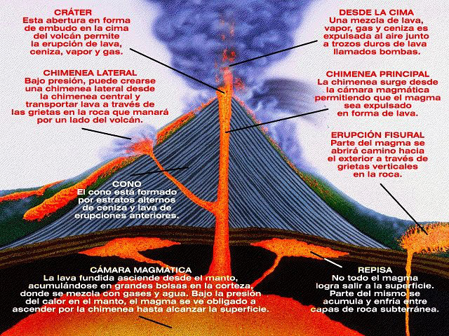

Estructura De Los Volcanes
Las partes de un volcán son: cámara magmática, chimenea, cráter y cono volcánico.
1- La cámara magmática es donde está almacenada la roca fundida, que puede provenir de la Astenósfera (100-700 kilómetros, en los límites de placas, dorsales y zonas de subducción) o de la Litósfera (por descompresión de los sólidos se vuelven líquidos), que forma la lava.
2- La chimenea es el conducto por donde asciende la lava.
3- El cráter es la parte del volcán por donde los materiales son arrojados al exterior.
4- El Cono volcánico volcánico es la aglomeración de lava y productos fragmentados. También es posible que en las fracturas del cono volcánico o en las erupciones se formen cráteres adventicios que se abren en los flancos o en su base y cuyas chimeneas secundarias tienen comunicación con la principal.
Equipo de Trabajo
Mark Zuckerberg

Asistió a la Universidad de Harvard , donde lanzó Facebook en febrero de 2004 con sus compañeros de habitación Eduardo Saverin , Andrew McCollum , Dustin Moskovitz y Chris Hughes . Lanzado originalmente para seleccionar campus universitarios, el sitio se expandió rápidamente y eventualmente más allá de las universidades, llegando a mil millones de usuarios en 2012.
Zuckerberg hizo pública la compañía en mayo de 2012 con acciones mayoritarias. En 2007, a los 23 años, se convirtió en el multimillonario hecho a sí mismo más joven del mundo. En marzo de 2022, el patrimonio neto de Zuckerberg era de 74.500 millones de dólares según Real Time Billionaires de Forbes .